Chapter 5 Distributions
Given a single variable, we often want to know what values are common and what values are rare. To visualize this, we will primarily compare marks along a common axis (the most accurate EPT). The only question is we have is how indicate how common particular values are.
5.0.1 Small samples
If we only have a few observations, then we can just graph them along an axis. If we have too many data points, we’ll have problems with over-plotting.
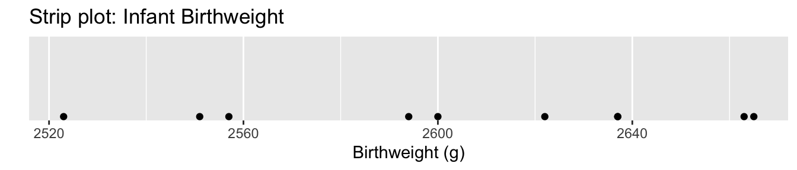
Another trick that works with more data, is to not use dots but rather lines. This is called a rugplot. The smaller width of the lines reduces, but don’t completely mitigate, the overplotting issue.
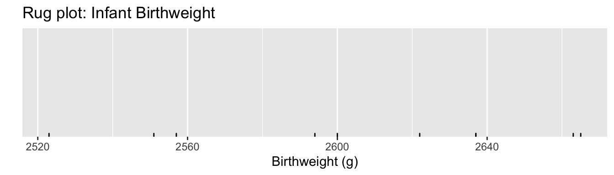 A rugplot layer is often used in conjunction with another graph such as a scatterplot.
5.0.2 Histograms
When we have a moderate size of data, graphing dots exactly on an axis doesn’t work and results in overplotting and it is difficult to see where the data cluster. Instead we’ll stack the dots in columns along the axis and call this a dotplot.
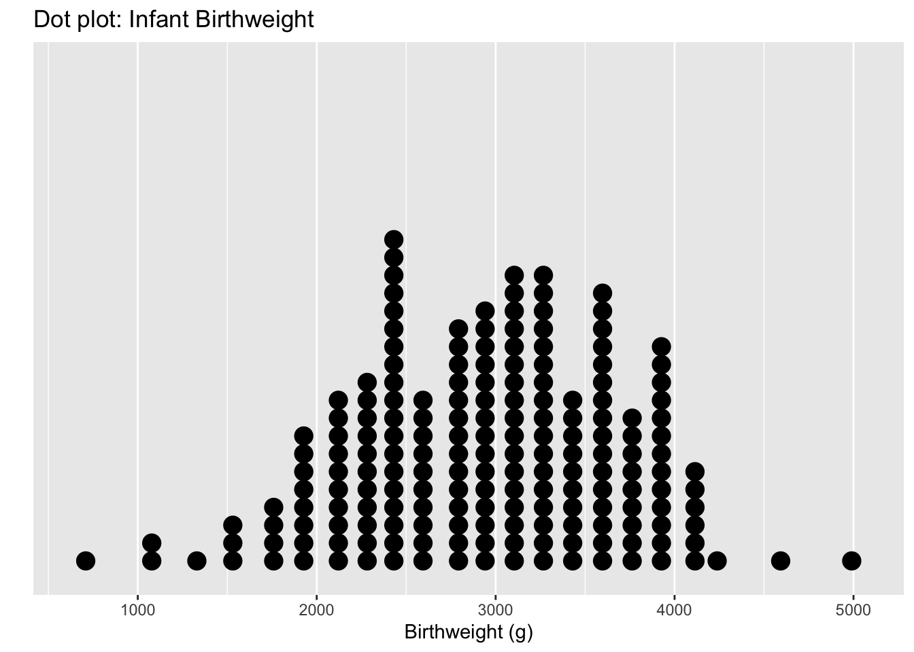
Each dot represents an observation, but the x-values have been rounded into group values. So we have lost some precision. Another common version of this is a histogram, where the y-axis represents how many observations fall into each bin.
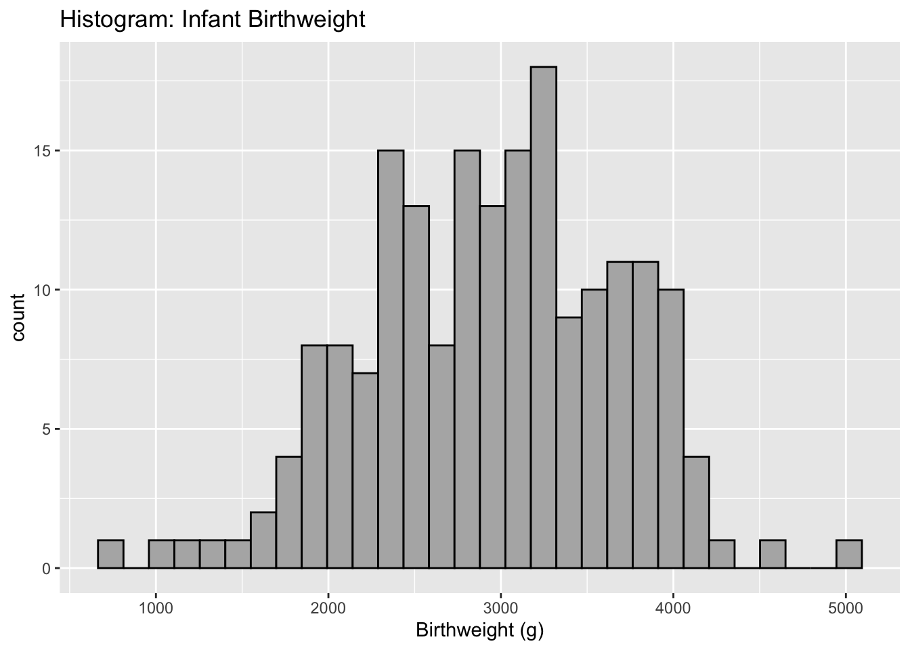
The choice of how many bins to include can make a dramatic difference in a graph. In particular, I don’t believe that there is any biological reason to think the dip near 2700 grams is real. I believe that is is actually just an artifact of the data I have. Instead we should consider changing the number of bins.
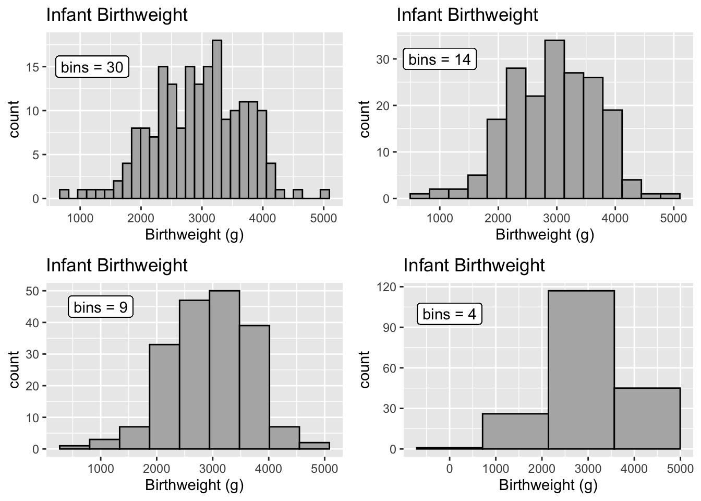
5.0.3 Density plots
Histograms suffer from being to angular or pointy. Another solution is call a kernel density smoother that mathematically smooths over the heights of the histogram bars. 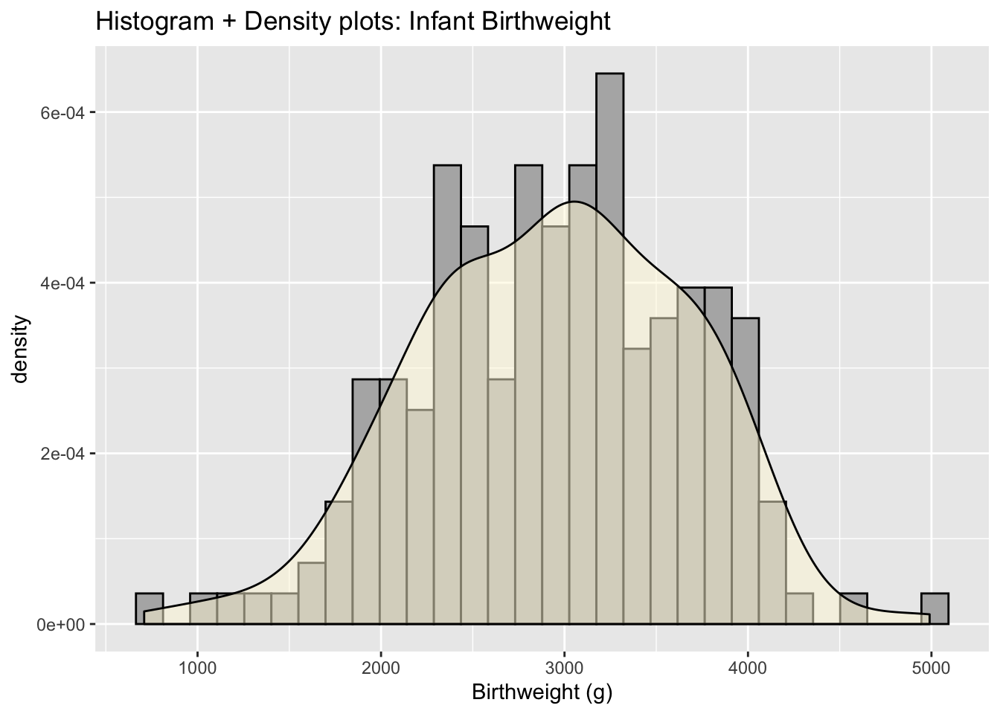
5.0.4 Faceting
One of my favorite ways to display multiple distributions is to group each distribution into it’s own plot in a process often referred to as faceting.
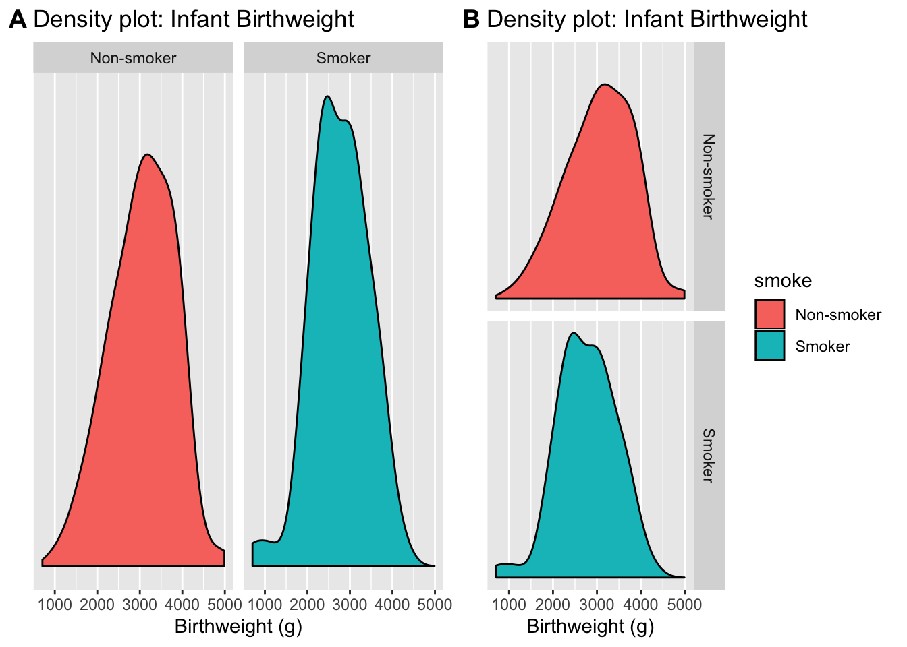
By choosing to put the two graphs on top of the other, it becomes clear that the smoker’s tend to give birth to smaller infants. This fact isn’t clear in the side-by-side graphs.
5.0.5 Stacking
Stacking the distribution involes laying each distribution on top of each other, so that the zero of the top curve follows the curve on the bottom. You can visualize the B chart having the Non-smoker density graph just melt onto the smoker density.
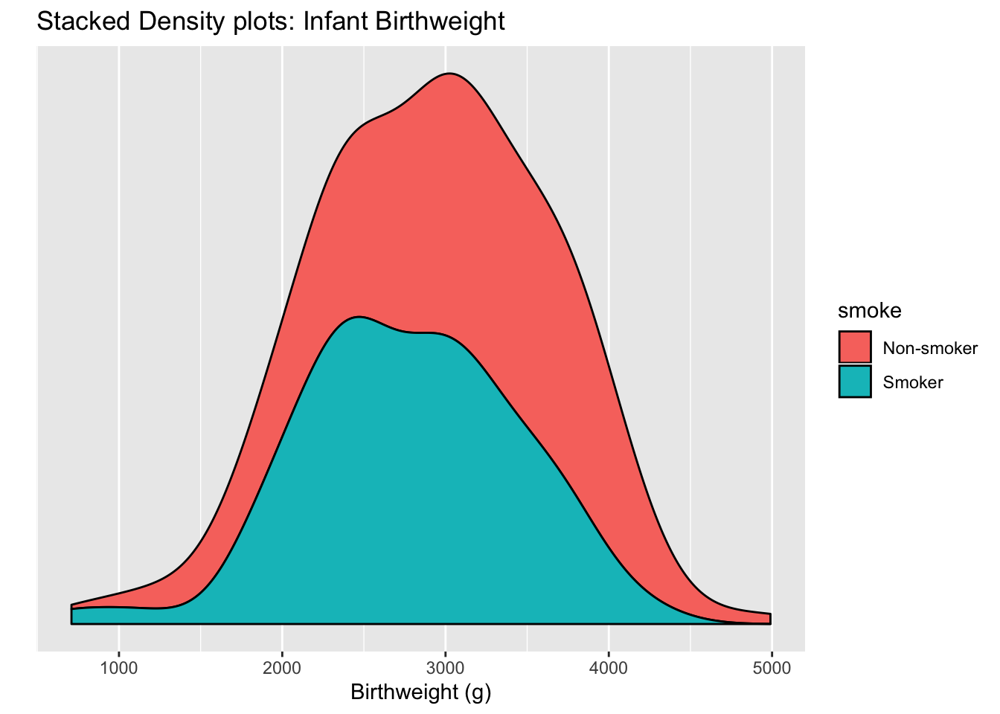 I really don’t like this graph because it is very hard to see where the peak of the non-smoker curve is. This stacking trick works well enough when we have proportions but isn’t good here.
5.0.6 Overlapping curves
Another option is to graph the densities, but allow them to overlap each other and be a bit see-thru. 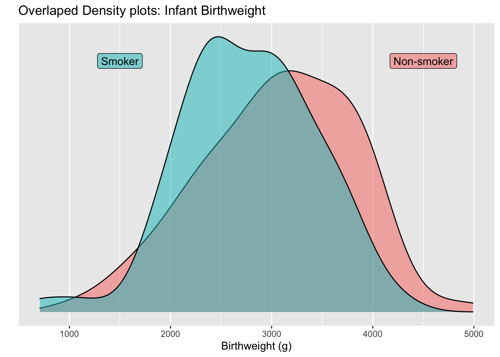
For seeing shifts in the center of the distribution, overlapping curves is quite powerful.
If we have a bunch of overlapping curves, but we stagger them along the y-axis, we get a type of graph called a ridge graph. The example I’ll show demostrates the daily maximum temperature in Lincoln Nebraska in 2016 and we show the temperature distribution for each month. Therefore we’ll have 12 different distributions to compare.
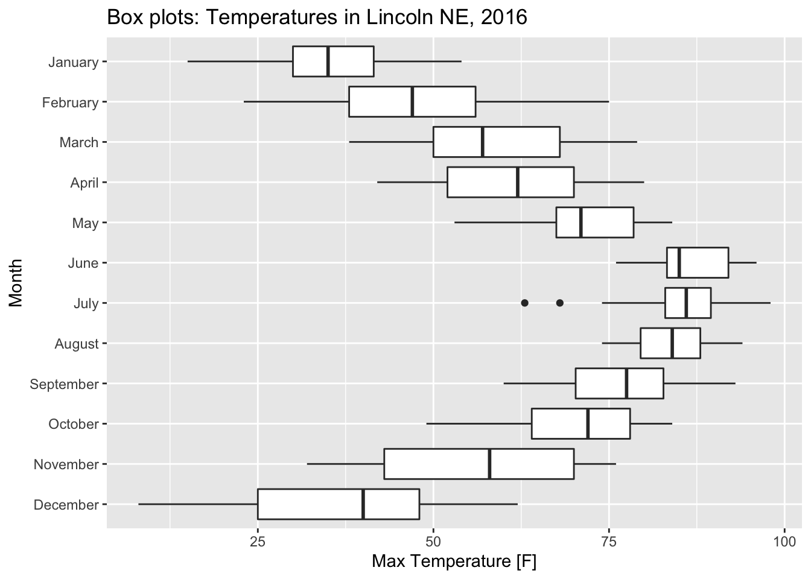
5.0.7 Boxplots
Boxplots are a traditional way to display a distribution and the box contains the middle 50% of the data points.
 Notice that in density plots, there were two peaks in December with the lower peak corresponding to a cold snap. However that detail is lost in the boxplots.
Notice that in density plots, there were two peaks in December with the lower peak corresponding to a cold snap. However that detail is lost in the boxplots.
5.0.8 Violin Plots
Boxplots are a traditional way to display a distribution and the box contains the middle 50% of the data points. 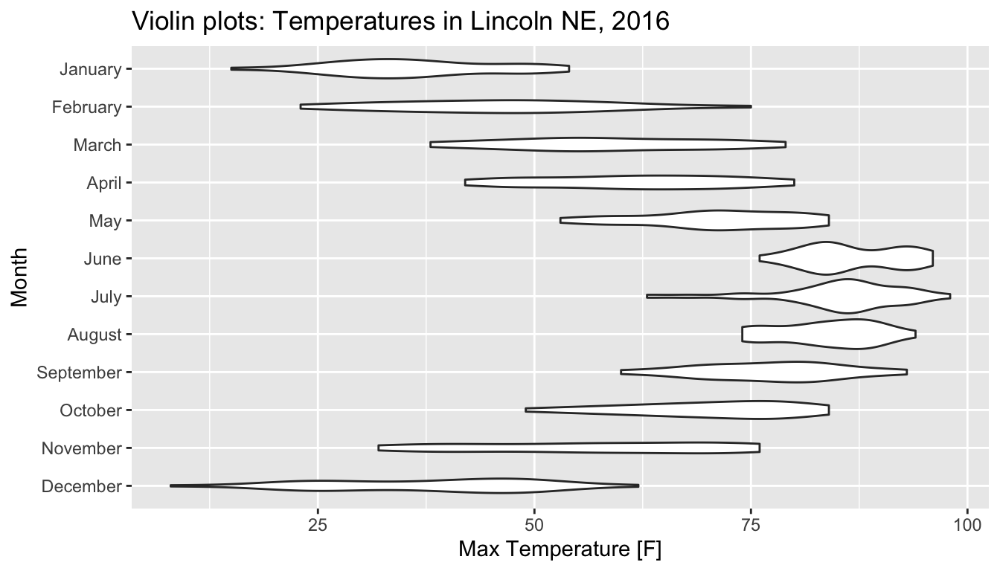 Now we can see the two peaks in December, but the three peaks in November have been flattened out because the amount of space necessary to show it would require that the densities overlap.